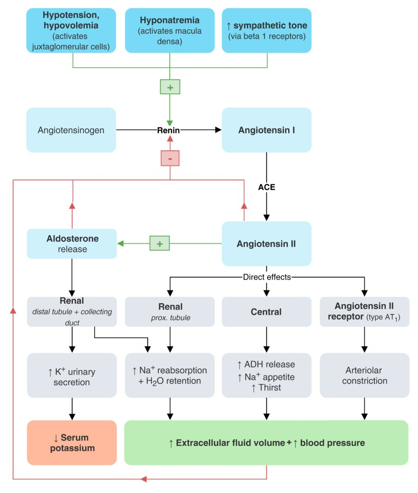

<div id="info" class="text"></div>

<div id="wrapper"><span class="label">Renal</span>
  <div class="branch lv1">

    <div class="entry"><span class="label" id="diuretic"><a>Diuretics</a></span>
      <div class="branch lv2">
        <div class="entry"><span class="label" id="thi"><a>Thiazides</a></span>
        </div>
        <div class="entry"><span class="label" id="loop"><a>Loop</a></span>
        </div>
        <div class="entry"><span class="label" id="kspare"><a>K sparing</a></span>
          <div class="branch lv2">
            <div class="entry"><span class="label" id="aldant"><a>Aldosterone receptor antagonists</a></span>
            </div>
            <div class="entry"><span class="label" id="enac"><a>Epithelial Na channel blockers</a></span>
            </div>
          </div>
        </div>
        <div class="entry"><span class="label" id="osmo"><a>Osmotic</a></span>
        </div>
        <div class="entry"><span class="label" id="cai"><a>Carbonic Anhydrase Inhibitors</a></span>
        </div>
      </div>
    </div>

    <div class="entry"><span class="label" id="raas"><a>RAAS<br> antagonists</a></span>
      <div class="branch lv1">
        <div class="entry"><span class="label" id="ace"><a>ACE inhibitors</a></span>
        </div>
        <div class="entry"><span class="label" id="arb"><a>ARBs</a></span>
        </div>
        <div class="entry"><span class="label" id="renin"><a>direct renin inhibitor</a></span>
        </div>
        </div>
    </div>

    <div class="entry"><span class="label" id="adh"><a>Antidiuretic hormone</a></span>
    </div>
    <div class="entry"><span class="label" id="adhant"><a>Antidiuretic hormone<br> antagonists</a></span>
    </div>

  </div>
</div>

<script>
  var display = document.getElementById('info');

  raas.addEventListener('click', function(){ display.innerHTML = raas.textContent + "<ul><li>strategy: decrease vascular resistance (BP = CO x SVR)</li></ul>" + "";}, false);
  ace.addEventListener('click', function(){ display.innerHTML = ace.textContent + "<ul><li>inhibition of ACE, preventing conversion of AT1 to AT2</li><li>decreased AT2 levels reduces peripheral resistance and afterload</li><li>decreased aldosterone decreases salt and water retention which reduces preload</li><li>decreased breakdown of bradykinin results in increased kinin activity and vasodilation</li><li>side effect: cough due to elevated bradykinin</li><li>ex: (-prils), captopril, lisinopril, enalapril</li></ul>";}, false);
  arb.addEventListener('click', function(){ display.innerHTML = arb.textContent + "<ul><li>blockade of AT2 receptors --> similar downstream effects as ACE-i's</li><li>decreased vasoconstriction leads to decreased BP</li><li>decreased aldosterone decreases salt and water retention which reduces preload</li><li>unlike ACE-i's, there is less cough due to less bradykinin elevation</li><li>ex: (-sartans), losartan, valsartan</li></ul>";}, false);
  renin.addEventListener('click', function(){ display.innerHTML = renin.textContent + "<ul><li>directly binds and inhibits renin, preventing conversion of angiotensinogen to AT1 --> decreased AT2</li><li>ex: aliskiren</li></ul>";}, false);


  diuretic.addEventListener('click', function(){ display.innerHTML = diuretic.textContent + "<ul><li>strategy: decrease preload (BP = CO x SVR)</li><li>reduce blood volume by increasing the rate of urine excretion</li><li>categorized according to the renal structures they act on, changes in volume/composition of urine, and electrolyte balance</li></ul>";}, false);
  thi.addEventListener('click', function(){ display.innerHTML = thi.textContent + "<ul><li>inhibit Na+Cl- cotransports in DCT --> blocks Na+ and Cl- reabsorption --> NaCl is excreted along with water into the urine</li><li>increases Ca2+ reabsorption</li><li>ex: Hydrochlorothiazide, chlorothiazide, metolazone</li><li>side effect: HyperGLUC(glycemia, lipidemia, uricemia, calcemia)</li></ul>";}, false);
  loop.addEventListener('click', function(){ display.innerHTML = loop.textContent + "<ul><li>inhibit Na+K+2Cl- cotransporter on thick ascending loop of Henle --> prevent Na+ and K+ reabsorption into renal medulla --> dimishing concentration gradient between renal medulla and cortex --> urine unable to be concentrated in collecting ducts --> increased diuresis</li><li>increase Ca2+ excretion</li><li>Sulfonamides: furosemide, torsemide, bumetanide</li><li>non-sulfur containing: ethacrynic acid</li><li>side effect: hypokalemia</li></ul>";}, false);
  kspare.addEventListener('click', function(){ display.innerHTML = kspare.textContent + "<ul><li>cause diuresis without significant potassium loss</li><li>because site of action is not in the proximal portions of the tubules, tubular flow is not increased (high tubular flow will increase K+ secretion)</li></ul>";}, false);
  aldant.addEventListener('click', function(){ display.innerHTML = aldant.textContent + "<ul><li>competitively bind to aldosterone receptors in DCT and collecting duct --> decreased Na+ reabsorption and K+ secretion --> diuresis</li><li>ex: spironolactone, eplerenone</li><li>side effect: hyperkalemia, spironolactone causes gynecomastia</li></ul>";}, false);
  enac.addEventListener('click', function(){ display.innerHTML = enac.textContent + "<ul><li>inhibition of LENaC in the DCT and collecting duct --> decreased Na+ reabsorption and K+ secretion --> diuresis</li><li>ex: triamterene, amiloride</li><li>side effect: hyperkalemia</li></ul>";}, false);
  osmo.addEventListener('click', function(){ display.innerHTML = osmo.textContent + "<ul><li>increases kidney tubular fluid osmolarity --> at the proximal tubule, pulls water from intersitial space into tubules via osmosis --> more water excretion</li><li>ex: mannitol, urea</li><li>side effects: dehyration without adequate water intake, increased ECF (leading to pulmonary edema)</li></ul>";}, false);
  cai.addEventListener('click', function(){ display.innerHTML = cai.textContent + "<ul><li>inhibit carbonic anhydrase at the PCT --> increase H+ reabsorption and inhibit Na+/H+ exchange --> increase bicarb elimination --> compensatory hyperventilation --> raise oxygenation</li><li>ex: acetazolamide</li><li>side effect: metabolic acidosis due to increased excretion of bicarb, renal stones due to decreased concentration of urine citrate, potassium wasting (increased Na+ delivery to distal nephron increases K+ excretion)</li></ul>";}, false);

  adh.addEventListener('click', function(){ display.innerHTML = adh.textContent + "<ul><li>upregulates selective water channels (aquaporin 2) in apical membrane of collecting ducts</li><li>ex: vasopressin, desmopressin</li></ul>";}, false);
  adhant.addEventListener('click', function(){ display.innerHTML = adh.textContent + "<ul><li>demeclocycline: </li><li>tolvaptan:</li></ul>";}, false);


</script>


<style>
.text{
  float: right;
  width: 500px;
}
a:hover {
        color: #ff0000;
        cursor: pointer;
    }

*,
*:before,
*:after {
  -webkit-box-sizing: border-box;
  -moz-box-sizing: border-box;
  box-sizing: border-box;
}
body {
  min-width: 1200px;
  margin: 0;
  padding: 50px;
  color: black;
  font: 16px Verdana, sans-serif;
  background: white;
  -webkit-user-select: none;
  -moz-user-select: none;
  -ms-user-select: none;
  user-select: none;
}
#wrapper {
  position: relative;
}
.branch {
  position: relative;
  margin-left: 250px;
}
.branch:before {
  content: "";
  width: 50px;
  border-top: 2px solid #000;
  position: absolute;
  left: -100px;
  top: 50%;
  margin-top: 1px;
}
.entry {
  position: relative;
  min-height: 60px;
}
.entry:before {
  content: "";
  height: 100%;
  border-left: 2px solid #000;
  position: absolute;
  left: -50px;
}
.entry:after {
  content: "";
  width: 50px;
  border-top: 2px solid #000;
  position: absolute;
  left: -50px;
  top: 50%;
  margin-top: 1px;
}
.entry:first-child:before {
  width: 10px;
  height: 50%;
  top: 50%;
  margin-top: 2px;
  border-radius: 10px 0 0 0;
}
.entry:first-child:after {
  height: 10px;
  border-radius: 10px 0 0 0;
}
.entry:last-child:before {
  width: 10px;
  height: 50%;
  border-radius: 0 0 0 10px;
}
.entry:last-child:after {
  height: 10px;
  border-top: none;
  border-bottom: 2px solid #000;
  border-radius: 0 0 0 10px;
  margin-top: -9px;
}
.entry.sole:before {
  display: none;
}
.entry.sole:after {
  width: 50px;
  height: 0;
  margin-top: 1px;
  border-radius: 0;
}
.label {
  display: block;
  min-width: 150px;
  padding: 5px 10px;
  line-height: 20px;
  text-align: center;
  border: 2px solid #000;
  border-radius: 5px;
  position: absolute;
  left: 0;
  top: 50%;
  margin-top: -15px;
}
</style>
